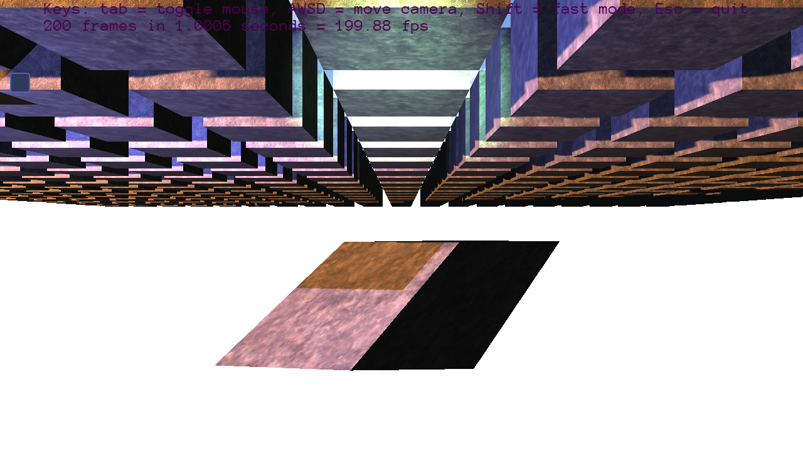

Sleepy
Hi, I’ve installed the latest release of Urho3D but when I run any of the bundled examples, or the example
here
, the Camera transforms are all incorrect. (see attached)
I think this may be due to the OpenGL version on my machine (4.6.0) - but I couldn’t find where the gl version is sepecified in the CMake files for the projects. If it helps, I’m currently running Linux using the propriatary Nvidia drivers.

Any help would be greatly appreciated


 . I tried removing the
. I tried removing the